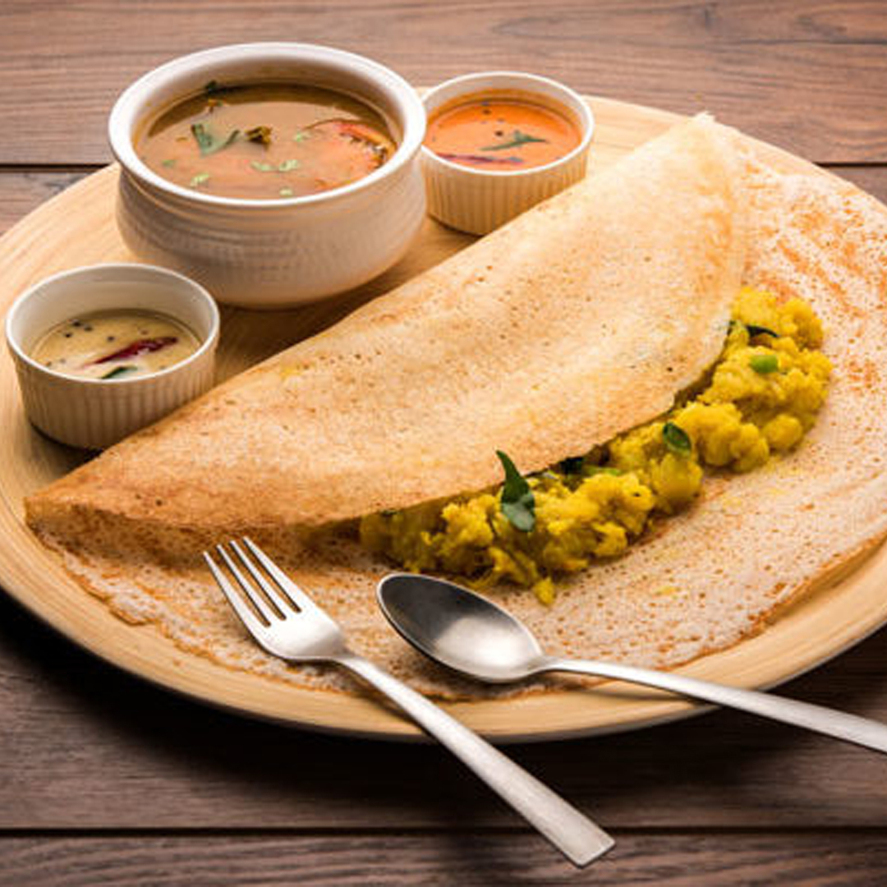

Masala Dosa

Instructions:
- Soak rice and urad dal separately for 6 hours. Grind to a smooth batter, ferment overnight, and add salt.
- For the masala filling, heat oil in a pan. Add mustard seeds, cumin seeds, asafoetida, and curry leaves.
- Add chopped onions and green chilies. Sauté until onions are golden brown.
- Add mashed potatoes and salt. Mix well and cook for a few minutes. Set aside.
- Heat a dosa pan, pour batter, and spread it thinly. Cook until the edges are crisp.
- Place a portion of masala in the center of the dosa. Fold it and serve hot with coconut chutney and sambar